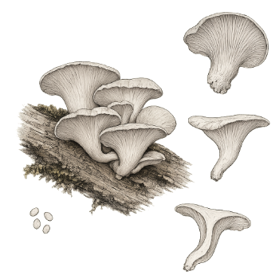

Ficha de especie · Pleurotus pulmonarius
Orellana blanca
Pleurotus pulmonarius
Una orellana de sombrero claro. Su nombre científico se presta a confusión, así que aquí usamos el aceptado y decimos qué cepa se estudió.
- Etapa
- Perfil en estudio. Sin validación local todavía.
- Nombre
- El nombre aceptado es Pleurotus pulmonarius. Pleurotus florida es un sinónimo.
- Origen
- Tenjo, Cundinamarca, Colombia

Lo que ya sabemos.
Resumen de estudios publicados. Algunas cifras vienen de una sola cepa.
-
No es la orellana gris
Se separó de Pleurotus ostreatus por análisis de ADN mitocondrial. Florida white no es un nombre científico formal.
-
Un estudio la prefiere fresca y húmeda
Wu et al. (2019) usaron 15 a 17 °C, 90 a 95 % de humedad y de 400 a 700 ppm de CO₂, con una sola cepa. Otras fuentes citan 25 a 26 °C, así que el rango no es definitivo.
-
Las cifras colombianas son de otra especie
Un estudio colombiano de 2025 trabajó con Pleurotus ostreatus, no con pulmonarius. Sus resultados no se trasladan a esta ficha.
Nombre
Una cepa, varios nombres.
Las cepas comerciales de orellana blanca se venden con nombres distintos. Para citar cifras necesitamos la ficha del proveedor o una identificación molecular.
Lo que aún medimos.
Dos datos que no podemos copiar de otro lugar.
-
Identidad de la cepa
Confirmar con el proveedor, o con un análisis molecular, qué especie estamos cultivando.
-
Condiciones y rendimiento propios
Registrar temperatura, humedad y CO₂ de nuestra cámara, y medir la eficiencia biológica con masa seca en cada lote.
Esta es una ficha de especie, no una oferta. No hay producto, precio ni disponibilidad, y no hacemos afirmaciones de salud.